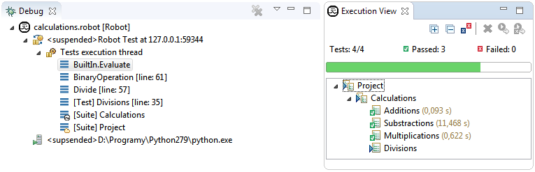
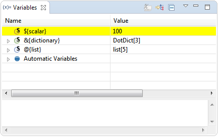
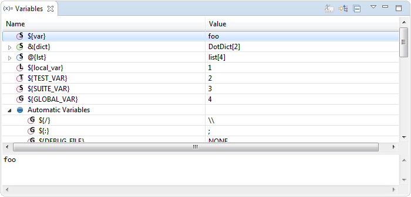
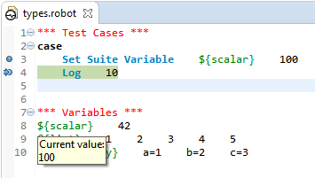
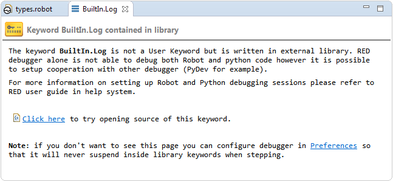

Hitting a breakpoint during debug execution
Whenever debugger suspends the execution there are many useful informations presented to user as well as new
opportunities to influence the running tests appear. First of all the toolbar buttons gets activated:

moving from left to right:
- Skip All Breakpoints - allow to continue execution onwards without stopping on defined breakpoints
(globally disabling all the breakpoints)
- Resume - F8 described in Controlling execution
- Suspend - as above
- Terminate - Ctrl+F2 as above
- Disconnect - as above
- Step Into - F5 - each F5 key press will execute active line and move to next
one. If active line consists Keyword or embedded TestCase, test executor will jump into item and execute
it line by line. To exit from executing inherited items use Step Return (F7)
- Step Over - F6 - each F6 key press will execute active line and move to next
one. If keyword exists in current line, keyword result will be returned without going into Keyword content
- Step Return - F7 - allows to return to main TestCase execution from embedded TestCase
or Keyword if Step Into was used before
Debug view
When execution is suspended the Debug view shows all the frames on current path in execution tree.
Bottom part of this path directly corresponds to the tree which can be seen in Execution view as
depicted below:

The bottom frame corresponds to Project suite (this is a directory in file system, so there is a
little directory decoration visible). Next frame corresponds to Calculations suite (which is a
calculations.robot file) and the frame above it represents Divisions test inside that
suite. Next frames do not correspond to any node inside the execution tree visible in Execution view. It
can be read that stopped execution is currently inside Divisions test at instruction in line
35, which called a keyword Divide which then called another keyword
BinaryDivision from line 57 which finally called library keyword Evaluate
coming from BuiltIn library at line 61.
Additionally you may see that there is a single execution thread (RF executes tests in single thread); the
execution is suspended and agent is communicating with RED using localhost at port 59344.
Variables view
Whenever you select some frame inside Debug view the Robot variables defined inside it are shown in
Variables view. This view handles scalar, list and dictionary variables. The scalar variable only shows
its value while the other two types are showing also the their contents inside it. Depending on the type of
variable the icon have different color assigned as visible on image below:

As you can see some of the variables are displayed under Automatic Variables node. This is a place
where all the variables which are built-in into the Robot are gathered together (refer to
RF User Guide). All the user variables are displayed on top-level.
Variable scope (see
User Guide on this topic) is reflected in this view using icon decoration: G, S, T or L
is placed on variable icon for Global, Suite, Test, Local scopes. You may find out
that global-scoped variables are visible for every single stack frame, suite-scoped variables are only visible
in a suite frame and frames below, test-scoped variables only in test frame and below while local-scoped variables
only in current frame. Of course for example ${SUITE_NAME} automatic variable (which has suite scope)
may be visible for all suite frames, however it may have different values as the suites are nested.
For both dictionaries and lists the actual type of the python object is written inValue column. On the picture above
DotDict[3] for &{dictionary} variable mean that in python this object has type DotDict,
the rest mean that there are 3 elements inside it. Lists are labeled in the same way.
Additionally you may display Actual Type column which would also show types of
objects for scalar variables and for objects inside list/dictionaries. To do it click on arrow icon in the top
right corner of the Variables view, choose Layout -> Select Columns... and select Actual Type
column.
Variables are send from Robot to RED every time when RED is ordered to suspend the execution. Sometimes you may observe
that variables are highlighted with yellow color:

This mean that variable ${scalar} either changed the value comparing to previous time when variables
were send to RED or it didn't existed previously. Same highlighting will be used if you manually change the value.
Changing variables
Apart from displaying variables, it is possible to change their values when execution gets suspended.
This can be done through Variables view in 3 possible ways:
- by editing the cell with value in Value column,
- by choosing Change Value... from context menu of selected variable,
- inside the panel at the bottom of Variables view.

Variable types
Scalar variables are assigned with provided value. In case of lists or dictionaries just use usual RobotFramework
separators in order to provide whole new list/dictionary. For example writing:
1 2 3 4
for list-variable will create a new list consisting 4 elements while writing:
a=1 b=2 c=3
for dictionary-variable will create a new dictionary consisting 3 key-value pairs. Alternatively list or
dictionary elements may be provided in comma-separated syntax using brackets:
[1,2,3,4]
and:
{a=1,b=2,c=3}
for lists and dictionaries respectively.
- Note
- Beside changing values of top-level variables it is also possible to change the values inside the lists or
dictionaries just the way it is described above.
If the value changes successfully the whole variable will be highlighted with yellow color, otherwise
you will be presented with error message in case of problems.
Editor
After suspension you may open source file related to any frame by double clicking on it. By default editor for
top frame is opened. Of course some frames may not have related source (for example frame representing a suite made
from directory). Remember that RED debugger only supports debugging Robot code so you will not be able to debug
python code for library keywords (you may however setup a session in which both
RF & python code is debugged). Frames created for library keywords have special kind of editor which
allows to find the source code for this keyword.

Instruction pointers
The editor opened for any frame displays instruction pointer - by default it's a green background
displayed in line which relates to chosen stack frame. You may also notice that instruction pointer for
top frame is a bit darker than pointers for other frames. The way the instruction pointers are displayed can be configured
in preferences:
General -> Editors > Text Editors > Annotations (change annotations Debug Call Stack for
ordinary frame or Debug Current Instruction Pointer for top frame)
You may also encounter situation in which current frame is somehow erroneous. This situation is rather unusual
in local launches (although may happen) but it can be more common in remote debugging sessions. There may be many
different causes for such debugging errors but in general it happens when remote code under execution differs
from the code found locally in RED workspace. For example picture below presents situation in which remotely
executing types.robot suite calls Log keyword, but in local code there is a call to
Log many keyword. As you can see instruction pointer in this situation is RED and there is a problem
explanation when you hover the cursor over the problematic line.

Similarly as with usual instruction pointer the outlook of erroneous annotations can be also changed in preferences
(look for Red Erroneous Debug Call Stack and Red Erroneous Debug Current Instruction Pointer).
Showing variables
The editor shows current values of variables when hovering mouse cursor over any variable name. This is depicted
on image above, where ${scalar} variable is shown to have current value of 100.
Assistance editor
Library keyword frames do not display the code, but instead special kind of debugger assistance editor
is used. For example if you Step Into the library keyword you will see following editor opened:

One may change Debugger preferences in order to never suspend inside the
library keyword this way.
Additionally assistance editor may also describe erroneous debugger states if there is no source in which
instruction pointer can be shown. You may found yourself in this situation even in local launches when your test
call some unknown keyword:

Continuing
Whenever you're ready to resume tests execution simply hit Resume button (or F8) and
debugger will suspend on next breakpoint or in next erroneous state (if not disabled in preferences) or whenever
you explicitly pause the execution. Apart from that you may perform step. There are 3 kinds of steps:
- Step Into F5 - this kind of step is only possible for top stack frame. When performing
step into the execution will resume only for a single step which will enter inside into the keyword from current
line.
- Step Over F6 - this kind of step is possible for every frame on stack and it will
behave differently for each of them. In general this kind of step means 'suspend the execution on next keyword
from instruction pointed by selected stack frame on the same level'.
- Step Return F7 - similarly to Step Over this action is possible for every frame
on stack and will have different behaviour. This kind of step means 'suspend the execution on next keyword which
will be executed after selected frame have ended'. For frame related to user keyword this mean that debugger
will pause on next instruction after this user keyword ends. For test-related frame the dubugger will suspend
at the very first instruction in next test (if any). For suite-related frame the debugger will suspend at very
first keyword in next suite (if any).
Of course the debugger will suspend if it encounter e.g. breakpoint inside the code which should be stepped over.